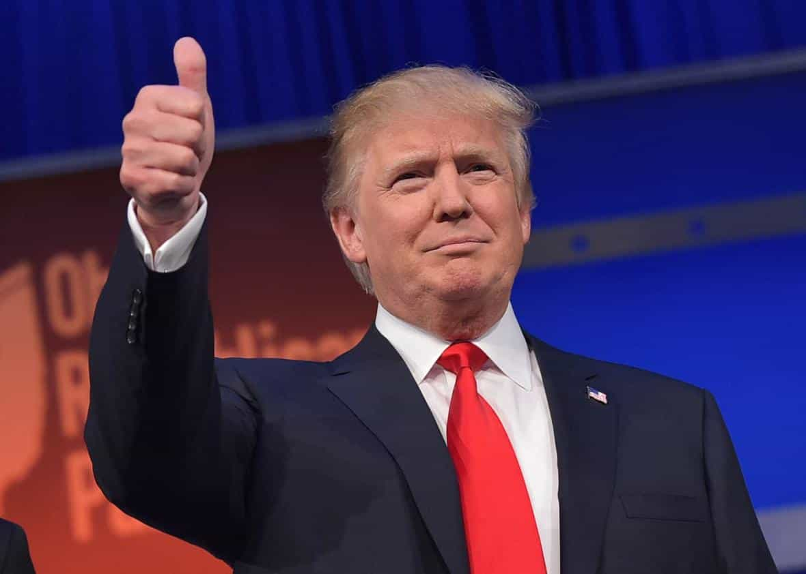

< < < Back
Jeb Bush Shows That A Royal Name And A Lot Of Money Won’t Win You Elections – Return Of Kings
The self-immolation of privileged political child Jeb Bush is now complete. Having suspended his campaign for President after another beyond mediocre finish in South Carolina, figures reveal he spent a gargantuan $368 per vote in the two primaries and one caucus so far. This is an amazing six times more than frontrunner Donald Trump. In addition, Bush had been anointed by the GOP apparatchiks, who have in modern times always gotten either their preferred candidate nominated or someone close to it. In the end, Donald Trump’s brutal honesty and lack of cuckservative supplicating has helped sink Jeb to the abyss.
But it gets worse. Even after himself spending $10 million more than Trump for a sixth of the ROR, his super PAC, Right to Rise, chipped in with a cool $100 million in expenditures. Per ballot he received, Jeb and his supporters were actually forking out $1,500. His humiliating withdrawal from the Republican nomination race (he should have said “I am clutching my rectum in pain”, not “I am suspending my campaign”) is a lesson for every would-be princeling that attitude and fearlessness will usually trump (pardon the pun) chandelier fundraisers and old moneyed political circles.
You can move beyond Donald Trump’s thumping of Jeb and find a literal menagerie of other candidates who have either beat him pound-for-pound or outright pummelled him in certain contests so far. For example, John Kasich, a comparative unknown in the field, bested Bush in New Hampshire, garnering nearly 50% more votes. Given his much lower profile, Kasich could have outspent Bush (which he did not) five times over in the Granite State for this performance and claimed a moral victory over him.
He was the most “qualified” candidate and still got his ass handed to him

Jeb destroyed his close to perfect opportunity to ascend. Despite the long-standing feud between the Republican base and the GOP establishment, primary and general election voters have nevertheless been wary of nominating and then electing to the White House Republicans without significant executive experience. Since 1950, only Kennedy and Obama, both Democrats, have become President minus either gubernatorial or Vice-Presidential experience. I leave out Eisenhower as his leadership of the US military is analogous enough to the pre-White House resumés of figures like Nixon, Reagan and the two Bushes.
Although Mike Huckabee, Jim Gilmore and George Pataki had been sworn in as the Governors of Arkansas, Virginia and New York respectively before Jeb was in Florida, they lack the family name and, very relatedly, the massive connections with GOP elites. The same can be said of current Governors Bobby Jindal (Louisiana), John Kasich (Ohio), Scott Walker (Wisconsin) and Chris Christie (New Jersey), plus recently retired Rick Perry (Texas), all of whom are bereft of the sort of immediate nationwide recognition and funding base afforded to the second son of George H. W. and Barbara Bush.
Donald Trump and Senator Ted Cruz are lightning rods for the disgruntled real conservatives of the Republican Party, this much is true. Irrespective of this, Jeb should have been the beneficiary of a system that can directly or indirectly gerrymander the outcome for establishment candidates, such as the superdelegate safety net for Hillary Clinton. This failure to tick the boxes after all the advantages bestowed upon him speaks volumes about the inadequacies of Jeb the Presidential candidate.
Trump focuses on the Republican base, Jeb focused on voters only 30% likely to vote for him

Jeb thought it was already November. I myself often question whether a candidate should always stick to their ideological guns in the general election, but Jeb courted the ambivalent centrist vote far too soon. Unlike a man like Trump, John Ellis Bush did not have the fortitude to outline his genuine, supposedly conservative platform first, secure the nomination, and then make strategic adjustments to win that vital second Tuesday late in the year.
Linked to this first point was Jeb’s total unwillingness to offend. When his campaign was in its death throes, he finally resorted to calling Donald Trump, of all things, a “loser.” Throughout his time as a candidate, however, the liberal media, which has every interest in seeing Donald Trump nominated as they see him as unelectable, failed to call Jeb out on anything they deemed hateful. There, my friends, was a sign of how far to the left his campaign had hurled itself.
Confidence, too, enters the mix, for more reasons than just a reluctance to offend. A family legacy and an esteemed status with GOP lawmakers and pundits in Washington does you no good if you cannot go toe-to-toe with bulls on a debate stage. Contrasting his brother’s plain-spoken, unrefined and self-assured style, somewhat reminiscent of Trump himself (save for Donald’s bellicosity), Jeb gave off the stench of a sweating acting school principal being bellowed at by the parents of a recently suspended student. So what benefit did his surname and fundraising connections give to him?
Study and replicate Donald Trump if you don’t wish to be a Jeb Bush

Inasmuch as Jeb’s downfall was enhanced by the presence of Donald Trump, my focus here has been on the pitiful shortcomings of the former Florida governor. Now that we have addressed those, ROK readers should take every chance to read up on and apply the methods of Donald Trump, the billionaire who does not need to use his billions.
The supreme tragedy of Jeb Bush is that he is not a bad guy. He is the polar opposite of a Hillary or Bill Clinton, whose unscrupulous machinations make them deservedly hated. Jeb is instead that old version of yourself in high school or early college, whose fumbling failures with girls and attempts at success and popularity gave you painful lessons to make a better future out of.
Jeb’s problem is that he seemingly never learned from those lessons and instead of being a half-pimply, gangly adolescent or young adult, he’s now past 60.
Read More: How Jeb Bush Destroyed The Bush Dynasty And Tanked His Own Campaign